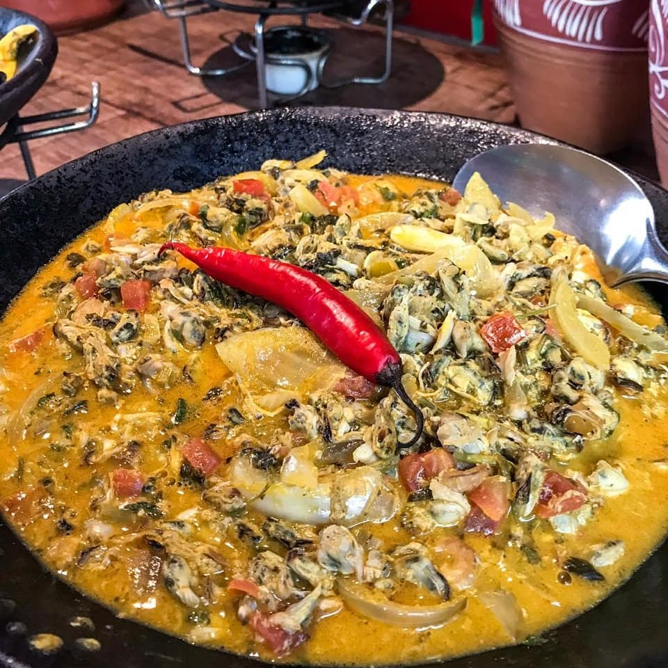
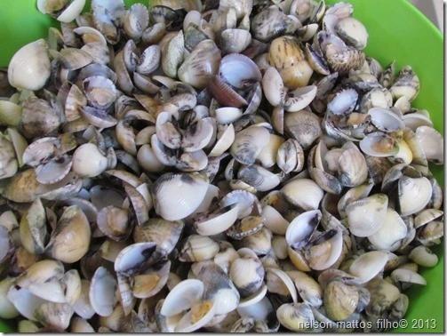

Sou Eliane Patrício, uma pessoa de 32 anos que encontra inspiração na diversidade da vida. Compartilho minha jornada com meu esposo e três adoráveis cachorros que amo muito. Minha busca por conhecimento me levou a explorar diversas áreas, incluindo a graduação em Análise e Desenvolvimento de Sistemas e uma incursão pela Administração de Empresas até o 6º semestre.
Trabalhei como Assistente Financeiro e de Rh e adquiri experiência em rotinas financeiras e recursos humanos realizando atividades como gerenciamento de banco de horas, controle de folha de ponto e elaboração de relatórios, onde meu domínio do Excel se destacou.
Hoje, estou empenhada em me tornar proficiente em análise de dados, participando do curso Google Professional Data Analytics e imersa na emocionante transição de carreira para a tecnologia. Também estou ampliando novas habilidades e conhecimentos por meio do curso na @vainaweb🧡, onde estou adquirindo competências em Desenvolvimento Web buscando uma constante evolução pessoal e profissional.
Sou de Salvador-Bahia, cidade que encanta com sua rica herança cultural e praias deslumbrantes.
Conheça um pouco da história de Salvador. Clique Aqui!!
Amo as músicas da By. Essa em especial pois, retrata o empoderamento negro e faz uma crítica a violência policial que a população negra sofre nos EUA.

